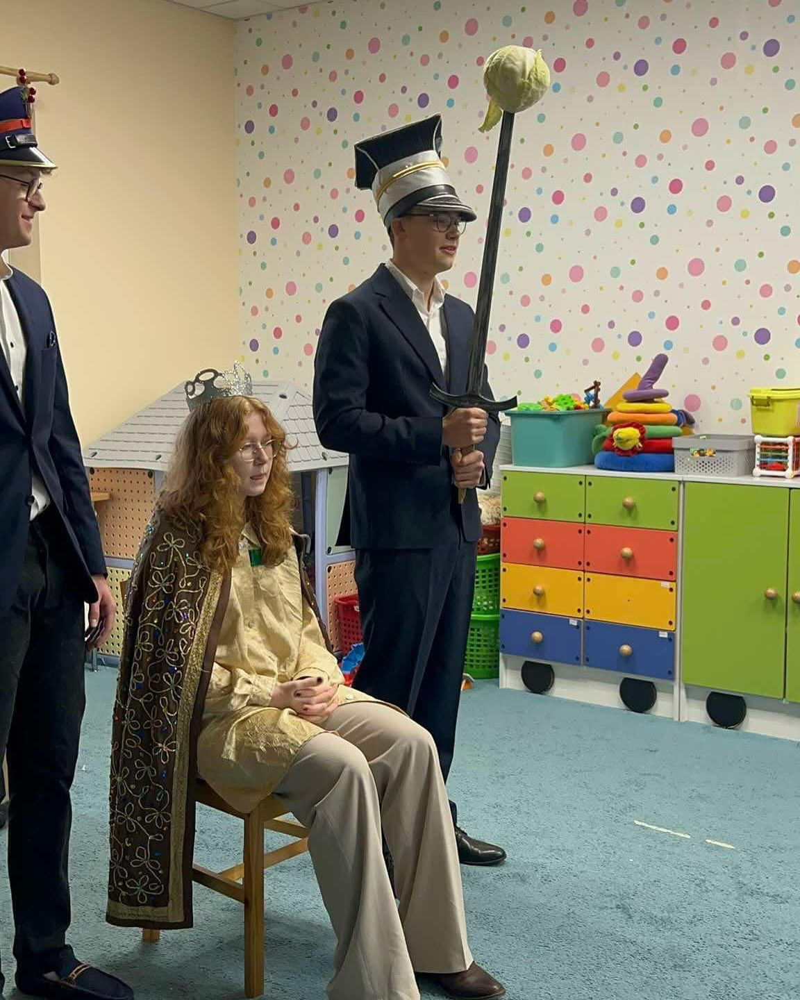
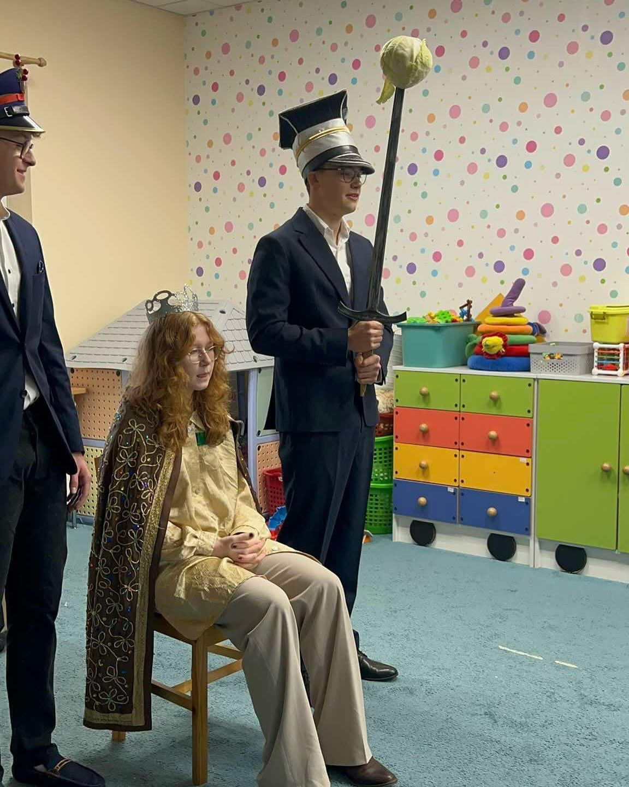
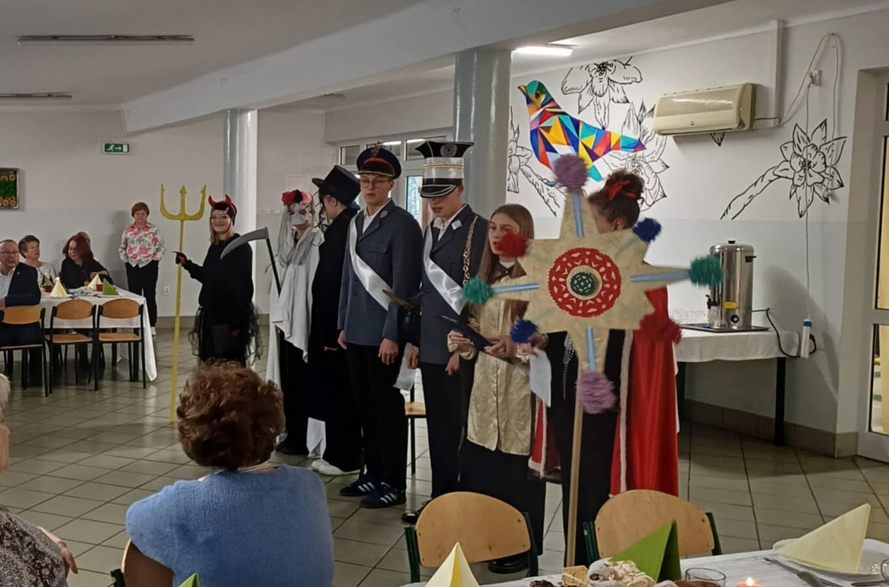
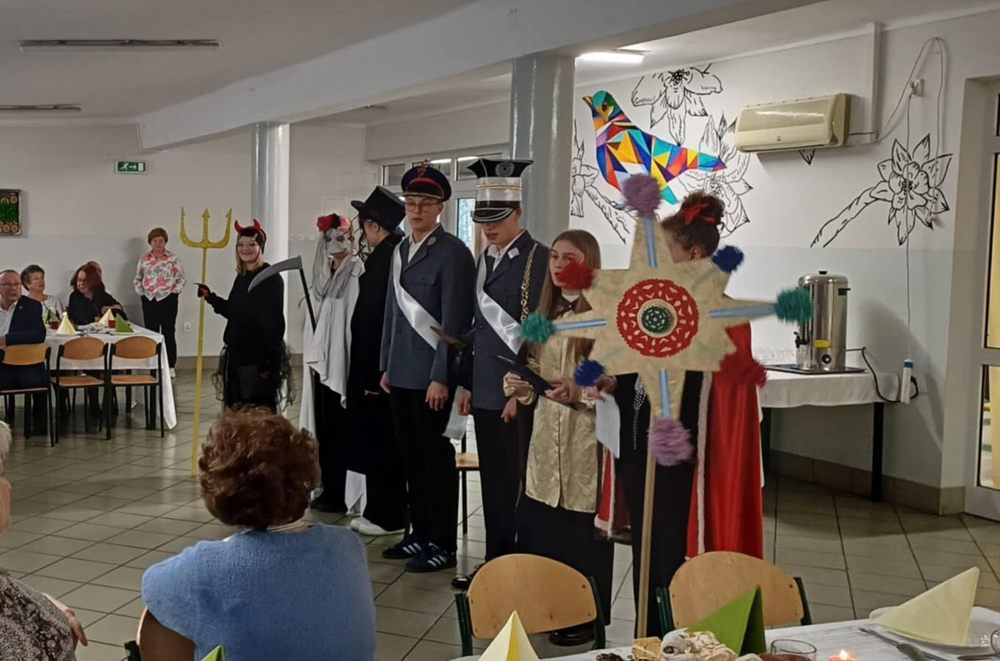
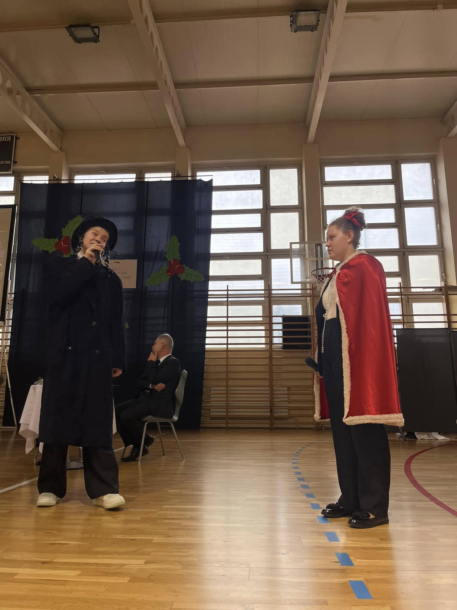
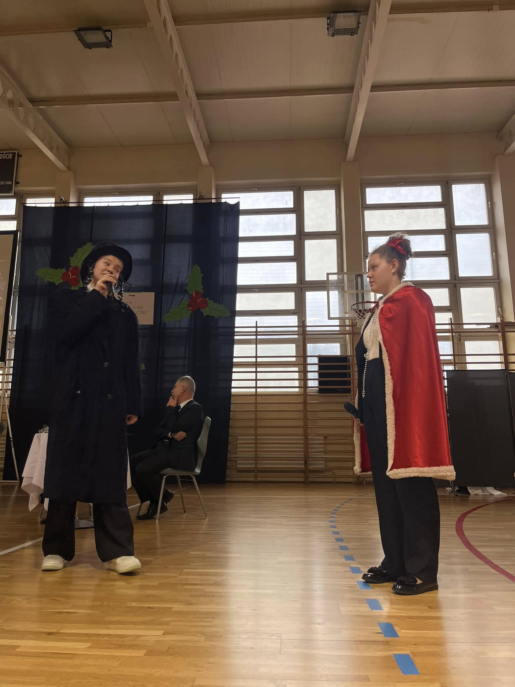
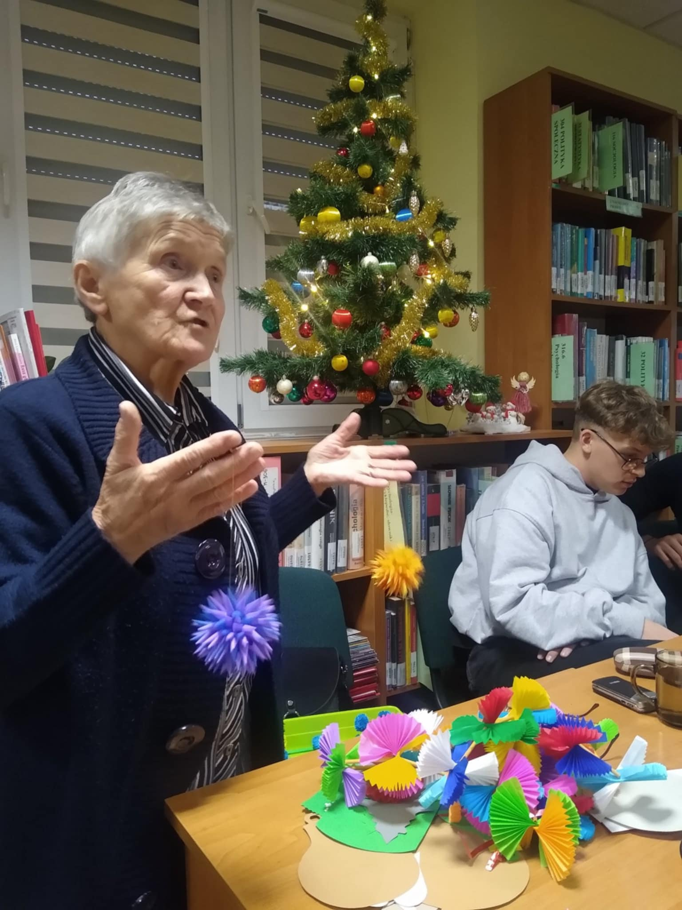
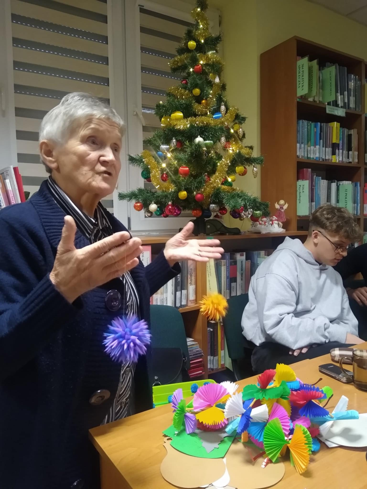
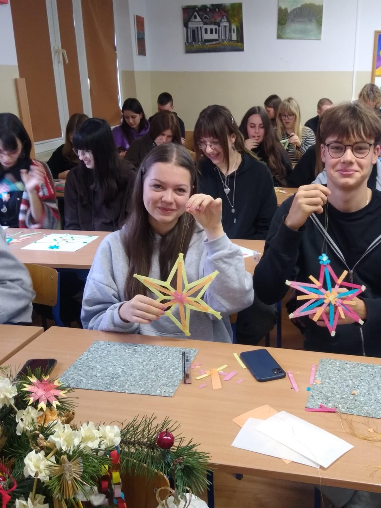
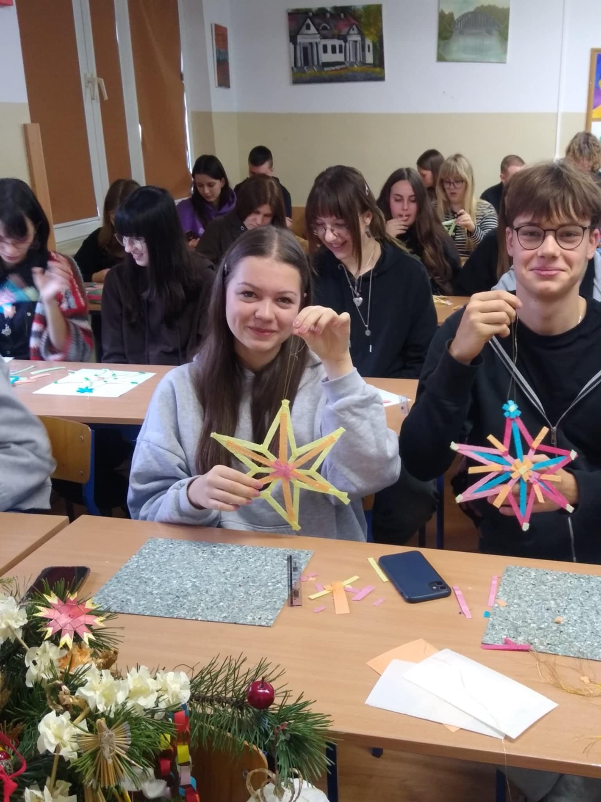

.png)
About Us
The FolkLove2025 project is part of the National Zwolnieni z Teorii Olympiad under the slogan "Folklore Lives in Us." Its aim is to introduce youth to the rituals and traditions of Polish folklore, ensuring their preservation for future generations.
The project team consists of students from II High School named after Bohaterowie Westerplatte in Garwolin:
- Zuzanna Buława
- Filip Gawenda
- Bartosz Zadróżny
- Oliwia Tchorek
- Dominika Buczek
- Project Leader: Oliwia Dadacz

Wydarzenia
 

On 17 January 2025, as part of the National Olympiad Zwolnieni z Teorii the Folklove2025 Project team consisting of: Oliwia Dadacz, Filip Gawenda, Oliwia Tchorek, Zuzanna Buława, Bartosz Zadróżny, supported by Kinga Mazek and Amelia Zabłocka visited the Private Kindergarten Juniorek in Garwolin. The team staged the traditional â€Herody Garwolińskie†performance, introducing children to the beauty of local folklore and ancient traditions. Preschoolers reacted vividly to the events on stage and look on the characters with great interest. After the performance, the students invited the little ones to play together, enjoying their energy and smiles! The entire visit took place in a warm and welcoming atmosphere. The mentor: Mrs Edyta Kacprowicz.💙💙


 

On 9th January 2025, the FolkLove2025 team staged ‘Herody Garwolińskie’ during the Christmas wafer-sharing gathering of the Pensioners and Annuitants’ section of the Union of Polish Teachers in Garwolin. ‘Herods’ is a traditional folk Christmas performance that tells the story of King Herod and the birth of Jesus Christ in an amusing way.🤗🥰🥳


 

On December 20, 2024, our team staged â€Herody Garwolińskieâ€. The text was prepared by Mrs. Agnieszka Karwowska to the book written by Mrs. Jadwiga Krześniak "Four seasons of the year in folk rituals", 🩷🩷which we want to publish. We prepared the performance thanks to the support and commitment of our Mentor Mrs. Angelika Chabrowska. Carollers have always been an integral part of folk folklore during Christmas. They appeared in homes on the evening of the first day of Christmas, bringing a joyful atmosphere and recreating colourful scenes referring to the biblical story of the birth of Jesus Christ. This tradition also had and still has its place in the Garwolin region. The procession of masqueraders was referred to as ‘Herods’. Their performances are stagings depicting the birth of Christ and the massacre of innocents in Bethlehem. The main, albeit negative, character of these performances is King Herod.🫅🫅 His arrival is usually announced by the faithful Pachołek or Het Marszałek. The play also features soldiers, a Jew, Deathâ˜ ï¸ taking Herod's life and the Devil👹 who runs for his soul with fork. Unfortunately, the tradition of staging Herods is slowly disappearing. Nowadays, groups of young people visiting houses often limit themselves to singing one carol, after which they end their performance.❄️🎄🌲
Amazing meeting with folklore!
 

On December 11, 2024 we had pleasure to take part in an unique meeting with Ms. Jadwiga Krześniak, a local folklore enthusiast. She introduced us to the disappearing traditions and rituals associated with Christmas. We gained unique access to her father's fascinating notes and learned how to create a variety of ornaments that used to adorn Christmas trees. Ms. Krześniak talked about the symbolism of those special decorations and told us about interesting and amusing proverbs related to the weather. We took this opportunity to record a short interview, in which Ms. Krześniak shares her knowledge and passion for folklore. We highly recommend watching it on our project’s social media profiles, where you can find detailed coverage of the event. If you are interested in our project, please like this post and follow our social media channels

 


On December 2, 2024, on the initiative of students implementing the FolkLove2025 project as part of the Zwolnieni z Teorii Olympiad, Christmas workshops were held led by Mrs. Edyta Sak from the Regional Museum in Łuków and Mr. Krzysztof Osak, who are both folk artists. During the workshops, participants made wafer stars, which were traditional decorations placed on ‘podłaźniczka’ – a traditional Polish and Slovak Christmas decoration. ❄️🌨️🎄 The podłaźniczka, hung from the ceiling above the Christmas Eve table, was decorated with apples, nuts, paper decorations and stars made of colorful wafer. The branches (or the top) of a coniferous tree were cut down to make a podłaźniczka on Christmas Eve very early in the morning, and the farmer who was the first to bring it into the room was to ensure the earliest growth and ripening of the grain in the coming year. Mrs. Edyta Sak introduced the youth to Polish Christmas traditions and customs in a picturesque way, showing the richness of their symbolism. For example, the number twelve simultaneously refers to the twelve apostles, the twelve months of the year and the twelve Christmas Eve dishes. The end of Advent was announced by playing the ligawa, a traditional instrument on which the students had the opportunity to try their skill during the workshops. Although playing the ligawa is not easy, our mate, Mateusz Wasążnik, managed to master the basics of this art. ğŸğŸ–¼ï¸ğŸŒˆğŸ©· The students passionately listened to the presenters’ story and were very enthusiastic about the opportunity to make their own decorations from colorful wafers. The organization of the workshops was possible thanks to the financial support of the Parents Council, for which we are very grateful. Such initiatives not only promote, but also remind us of Polish traditions, which, although little known, are extremely interesting and valuable. 🌨️❄️🎁🌠
Project
The FolkLove2025 project promotes folk traditions and culture. We aim to familiarize young people with rituals related to holidays and encourage them to expand their knowledge on this subject. Our goal is to ensure that folk traditions are not forgotten and find their place in daily life.
Folk culture is the foundation of our national identity. It has helped us endure the partitions and repressions during World War II.
As part of the project, we plan to:
- Herody Garwolińskie: Revive the tradition of staging this performance, last held in 1984.
- Book publication: A book by Mrs. Jadwiga Krześniak with a chapter on bread baking traditions by Mrs. Angelika Chabrowska.
About Folklore
Folklore is a key element of our national identity, connecting generations and communities.
Christmas
Caroling, pastorals, and the Christmas Eve table are central elements of Polish holiday traditions.
Easter
Traditions such as egg painting, food blessing, and the water sprinkling custom enrich the Easter celebrations.